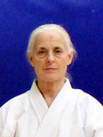
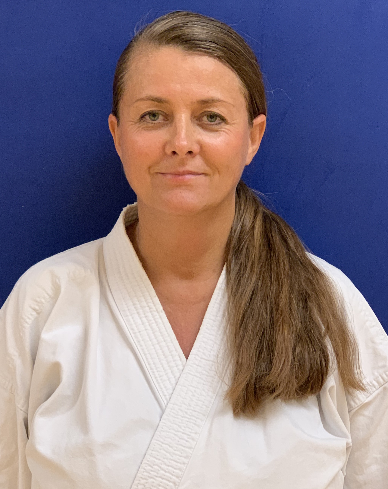

|  |
Sensei Bonnie Baker has taught the club ever since its foundation over twenty years ago. She was Dai Senpai under Master Ronald Taganashi for eleven years, and currently holds a Hachidan (8th degree) black belt in Goju Karate and a Yon Dan (4th degree) black belt in Ju-Jutsu. She has over forty years of experience in the martial arts and nearly thirty years of experience in teaching. |
|
Sensei Tito Valentine has come to the club as a black belt in both Goju Karate and Aiki-Jitsu. He brings his unique blend of these and other martial arts styles into teaching of the class. |
|  |
Sensei Laki (Latinka Laki Djokovic-Igrutinovic) holds black belts in both Goju Ryu (2nd dan) and Shotokan (1st dan) Karate. She is from former Yugoslavia, where she started practicing Shotokan at age 14. Sensei Laki came to the U.S. in 1997 and has been training in Goju Ryu for 17 years under Senseis Dave Anderson and Bonnie Baker. She has over 30 years of experience teaching martial arts with a focus on effective and practical real-life self-defense. |